Cuando ejecutamos npm run dev o npm run preview en Vite, lo que estamos haciendo es levantar un servidor frontal .
La tarea de este servidor frontal es doble.
1 Tarea: Servir archivos estáticos
Por un lado servir archivos estáticos que van desde JS o CSS hasta imagenes, videos o cualquier otro archivo como puede ser un simple PDF o un documento XML, a todos estos archivos el usuario accede mediante una URL concreta que parte siempre desde un directorio raíz, que es lo que consideramos (/).
Por eso cuando nosotros en un index.html escribimos por ejemplo "/src/favicon.svg" estamos estableciendo una ruta partiendo de una barra (/) que es el directorio raíz que variará en función de los servidores, para desarrollo será una y para producción o preview será otra.
2 Tarea: Servir páginas
La segunda tarea es la de servir páginas, en este caso como el servidor frontal está configurado para React, todas las páginas serán redireccionadas al index.html ya que la gestión de rutas típicas que suele haber en un servidor frontal en este caso se realiza desde JavaScript dentro del main.jsx y esto lo veremos mucho más adelante.
Entendiendo el servidor de desarrollo
Lo que tenemos que entender ahora es como funciona este servidor frontal y como resuelve las distintas peticiones get de HTTP que recibe a través del navegador, que reglas está utilizando para determinar si debe servir un archivo estático o una página o simplemente devolver un error 404.
Para entender el servidor de desarrollo vamos a empezar por levantar nuestro servidor de desarrollo con :
npm run dev
Para este servidor de desarrollo su raíz será toda la carpeta del proyecto, es decir, la carpeta First-Project
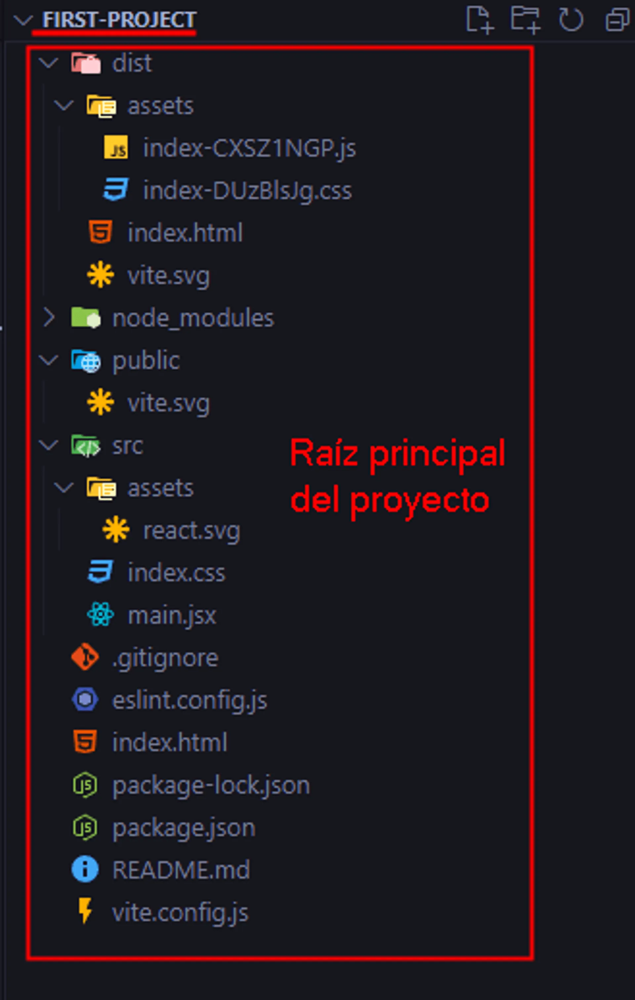
Por eso cuando nosotros buscamos desde la barra de navegación, por ejemplo: "/src/assets/react.svg" vemos que el recurso al que queremos acceder, se puede acceder sin problema.
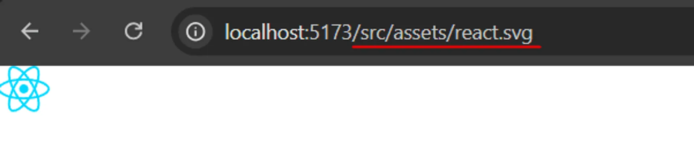
Ahora tenemos que entender la prioridad de este servidor y es que su prioridad es siempre buscar archivos estáticos, es decir, si existe un archivo estático que coincida con alguna ruta, lo devolverá sobre cualquier cosa.
Solo en el caso de que encuentre una ruta que no coincida con ningún archivo, por ejemplo: "/asd" lo interpretará como una página y no como un archivo estático.
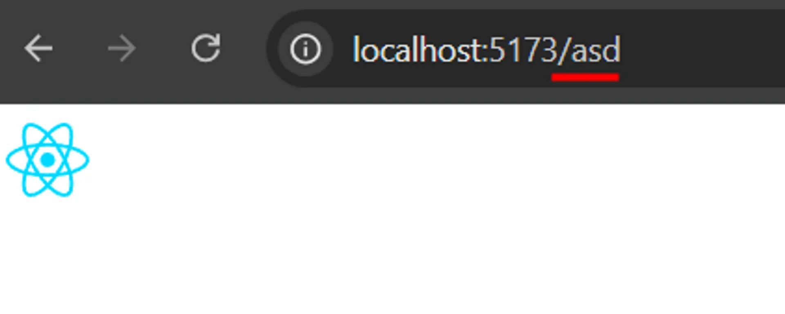
En este casó como en todas las páginas nos devuelve el index.html es por eso que podemos ver el logo, recordemos que en el index.html estamos cargando el logo de React.
El comportamiento que observamos en la imagen de arriba, donde Vite redirige al index.html cuando la ruta que intentamos acceder no coincide con ningún archivo estático o una página válida, está relacionado con el soporte para SPAs. En aplicaciones como React, la redirección automática al index.html asegura que cualquier ruta que no sea un archivo estático pero sea válida dentro del sistema de rutas del cliente (React Router, por ejemplo), funcione correctamente.
Este comportamiento se controla a través de la configuración del middleware de Vite, que utiliza una estrategia llamada "history fallback" o "HTML5 history API fallback". Esto significa que si no se encuentra un archivo estático que coincida con la ruta, el servidor automáticamente devuelve index.html, de modo que la aplicación React pueda manejar la ruta.
Pero para comprobar que esto es así, crearemos un archivo en la raiz de nuestro proyecto que se llame asd, y pondremos un simple saludo.
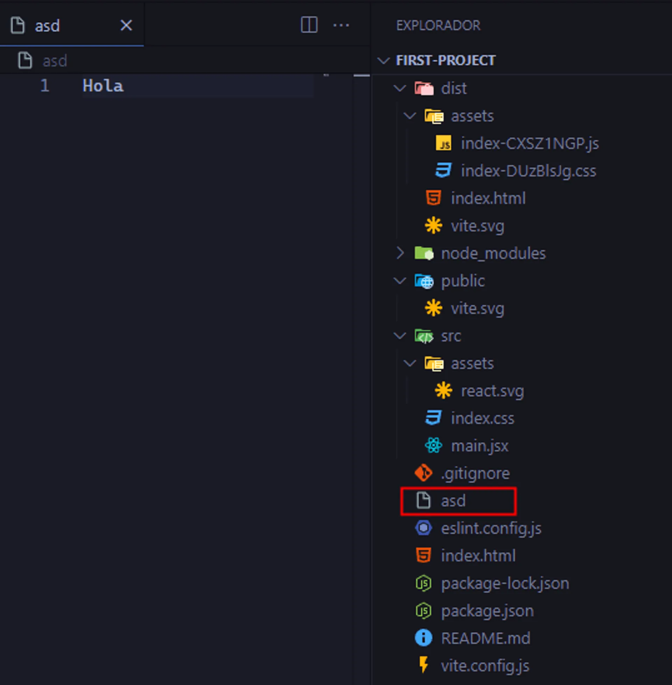
Entonces si volvemos hacer la petición que habiamos hecho antes "/asd", como existe un archivo estático que coincide con la ruta, pues lo mostrará en pantalla.
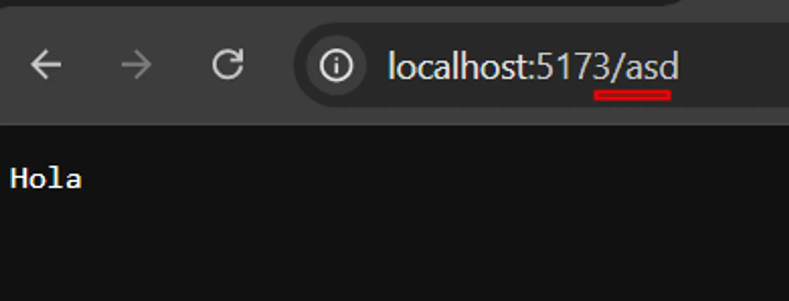
En resumen, cualquier ruta que no coincida inicialmente con un archivo estático será tratada como una página. Si la ruta no coincide con ninguna página o si esa página no existe, Vite redireccionará automáticamente al index.html.
Carpeta public
Pero a mayores de esto, recordemos que tenemos la carpeta public donde deben alojarse los archivos estáticos, entonces cualquier archivo estático que exista dentro de esta carpeta, nuestra carpeta public será tratada como si fuera la raíz de nuestro proyecto y se le dará proridad sobre todos los demás.
Pongamos a prueba esto, crearemos dentro la carpeta public un archivo que tambien se llame "asd" y escribiremos un texto por ejemplo: "Hola desde public".
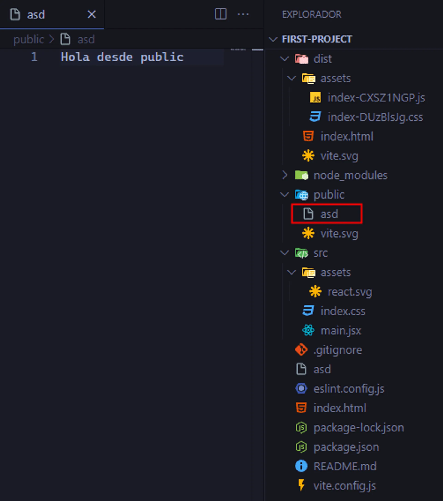
Recordemos que ya tenemos un archivo llamado "asd" en la raíz de nuestro proyecto, y a su vez hemos creado otro archivo tambien llamado "asd" que se encuentra dentro de la carpeta public.
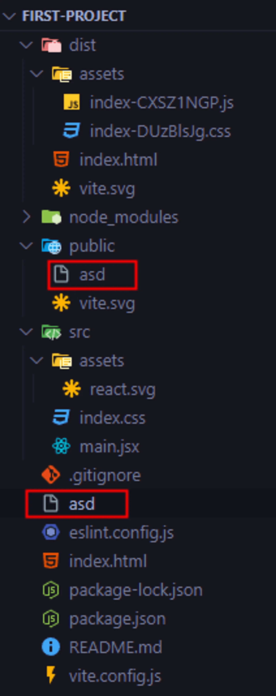
Si ahora volvemos hacer la petición a la ruta "/asd" miraremos que toma como prioridad los archivos estáticos que se encuentren dentro de la carpeta public.
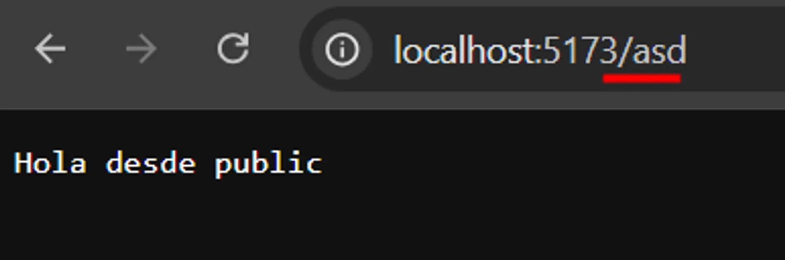
Entonces cuando encontremos 2 archivos que coincidan con el mismo nombre, siempre se le dará la prioridad al que se encuentre dentro de public, veremos que está carpeta public es muy importante cuando lleguemos hablar del servidor de preview.
Cuando encontremos 2 archivos que coincidan con el mismo nombre, siempre se le dará la prioridad al que se encuentre dentro de public
Todos los archivos estáticos deberiamos ubicarlos en la carpeta
public.
Ahora veremos porque todos los archivos estáticos deberian ir dentro de la carpeta public.
Entendiendo el servidor de producción
De primeras eliminaremos nuestra carpeta public.
Ahora generamos nuestra versión de producción con el comando:
npm run build
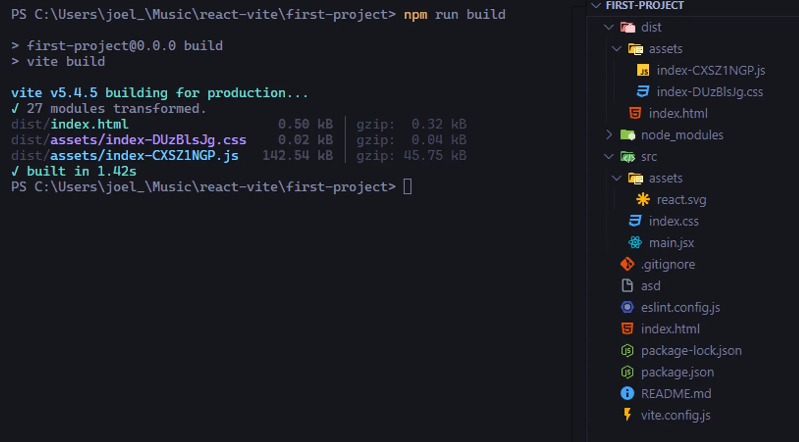
Ahora creamos nuestro servidor de producción o previsualización con el comando:
npm run preview
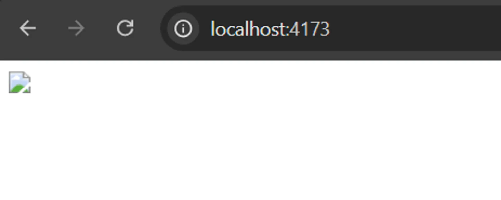
Vemos que la imagen no funciona.
¿Por qué la imagen que estamos intentando cargar en el main.jsx no funciona? Porque la carpeta raíz de este servidor ahora mismo pasa a ser la carpeta "dist" y ya no la carpeta "firs-project".
Entonces todo lo que exista en "dist" será accesible desde la barra del navegador, por ejemplo: accederemos al archivo "/assets/index-CXSZ1NGP.js".
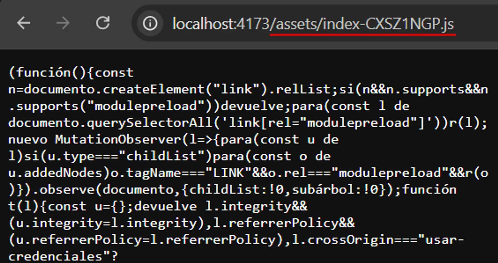
Ahora, si nosotros intentamos acceder, por ejemplo, al archivo "asd" que tenemos dentro de la raíz principal del proyecto, miraremos que no es accesible ya que no se encuentra en la carpeta "dist".
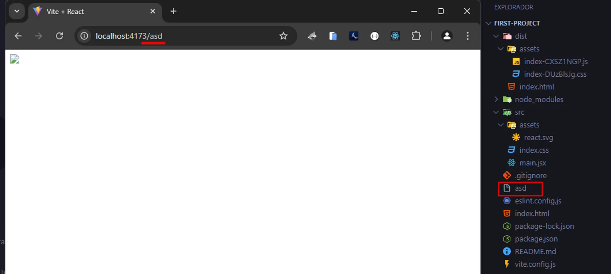
Como ya nos habremos percatado, se están siguiendo las mismas reglas que en el servidor de desarrollo. Si la ruta no coincide con ningún archivo estático o a ninguna página o si esa página no existe, Vite redireccionará automáticamente al index.html. La única diferencia es que toma en cuenta la raiz "dist".
En resumen todo archivo al que queramos acceder desde la barra del navgeador, si no se encuentra o no coincide con nigun archivo en la carpeta "dist" redireccionará al index.html.
¿Como puedo hacer que mis archivos estáticos que yo genere en mi "src" o donde sea, se copien dentro de "dist"?
Intentaremos importar el archivo "react.svg" que se encuentra en la ubicación "/src/assets/react.svg" de forma que sea válido tanto para desarrollo como para producción .
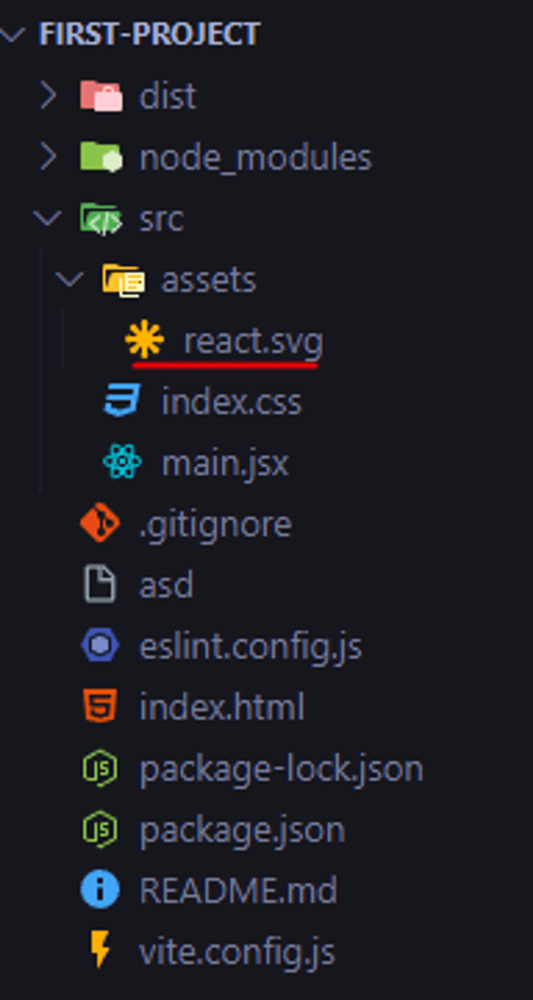
Opción 1: Utilizando import - "No recomendada"
La primera opción que no es recomendable, es utilizar un import desde el código, obteniendo la URL de la imagen y sustituyendola en el src de nuestra imagen que queremos importar.
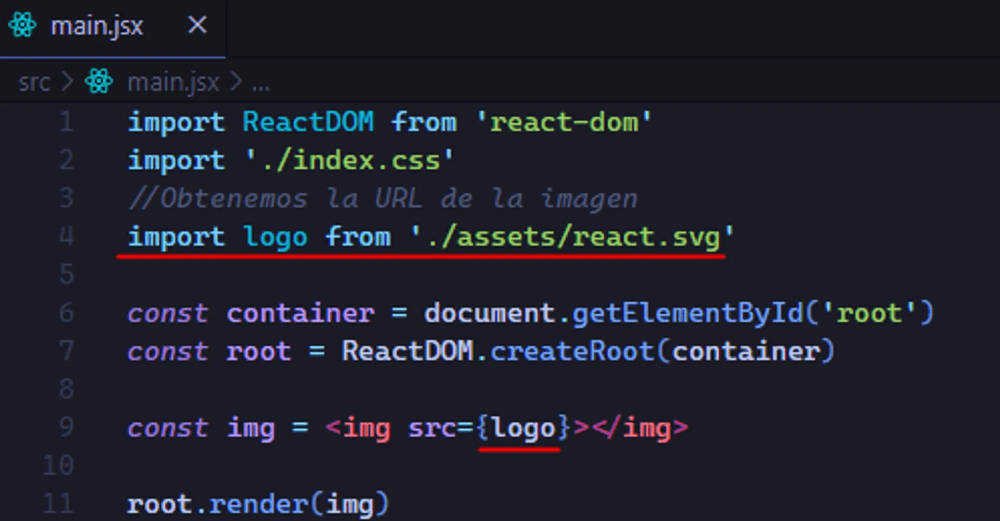
Esto es posible porque Vite utiliza un empaquetador que es "esbuild" y cuando ve algo así, lo que hace es obtener su URL tanto para desarrollo como para producción.
Entonces si generamos nuestro servidor de desarrollo con el comando:
npm run dev
Observaremos que la imagen se carga correctamente.
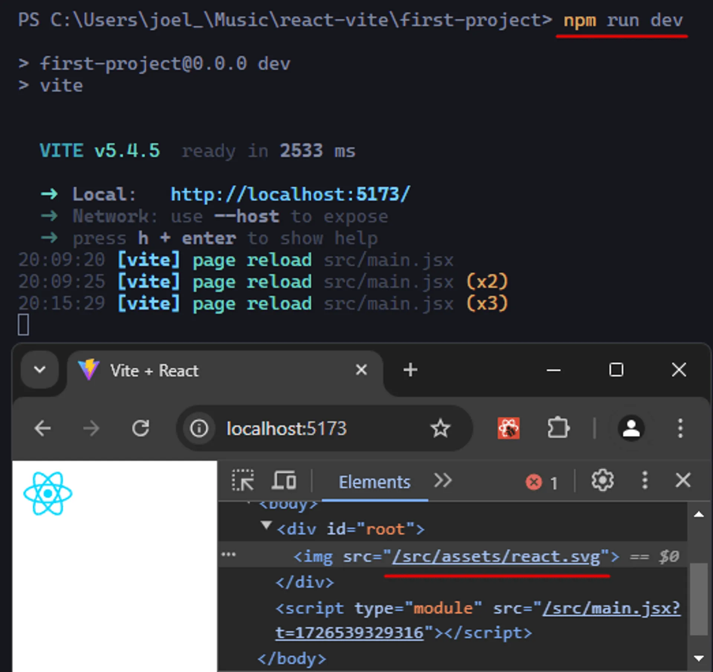
Si ahora generamos nuestra versión de producción con el comando:
npm run build
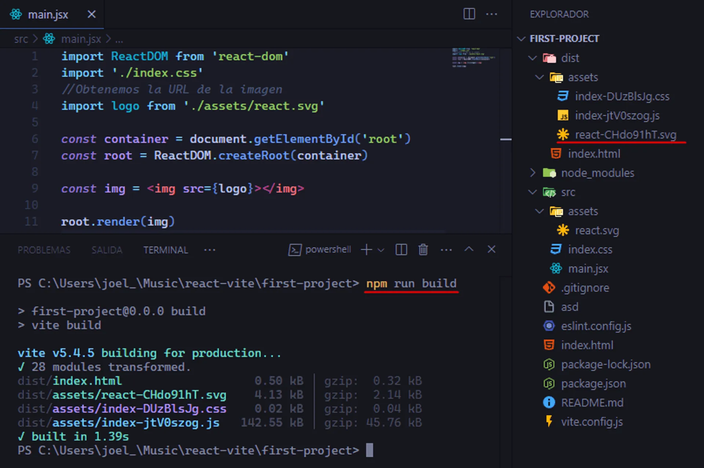
Cuando "esbuild" se encuentra el import en nuestro código, lo que hace es copiar el achivo "react.svg" en la carpeta "assets" de la carpeta "dist" y además le agrega un puqueño hash para evitar colisiones con otros archivos que tengan el mismo nombre de "react.svg".
Y si después generamos el servidor de producción con el comando:
npm run preview
Miraremos que la imagen tambien se carga correctamente.
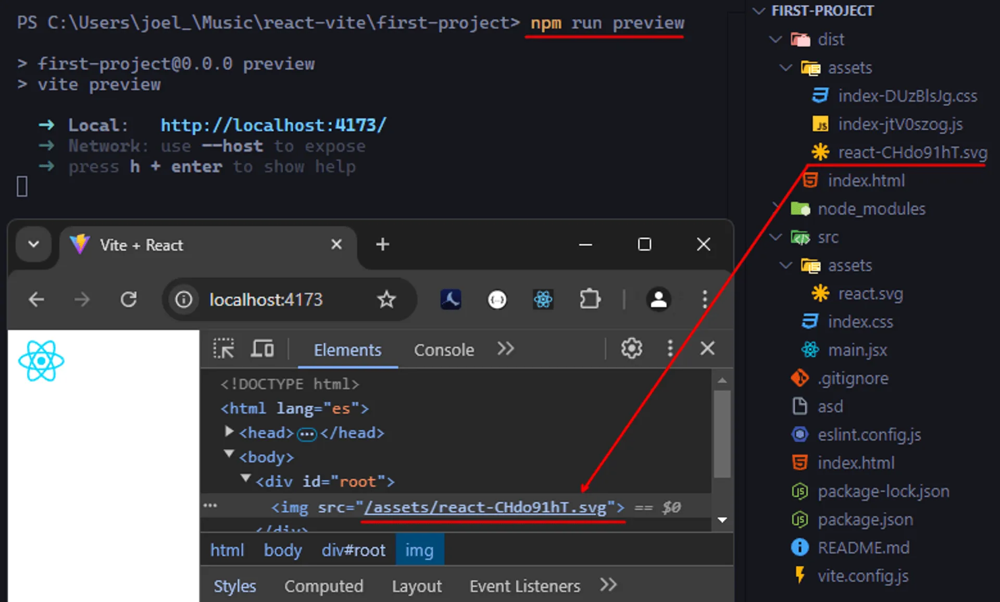
Esta sería la primera forma de hacerlo, pero no es la mejor, ni la mas recomendable.
Opción 2: Utilizando la carpeta public - "Recomendada"
Hay que recordar que todo lo que se encuentre dentro de la carpeta public se copiará tal cual en la raíz de la carpeta "dist", esto incluye el nombre de los archivos, carpetas, todo se pasa exactamente igual a "dist".
Empezaremos por eliminar el archivo "asd" que habiamos creado en la raíz del proyecto.
En la raíz del proyecto crearemos la carpeta public y moveremos la carpeta "assets" que se encuentra en "src" a la carpeta public.
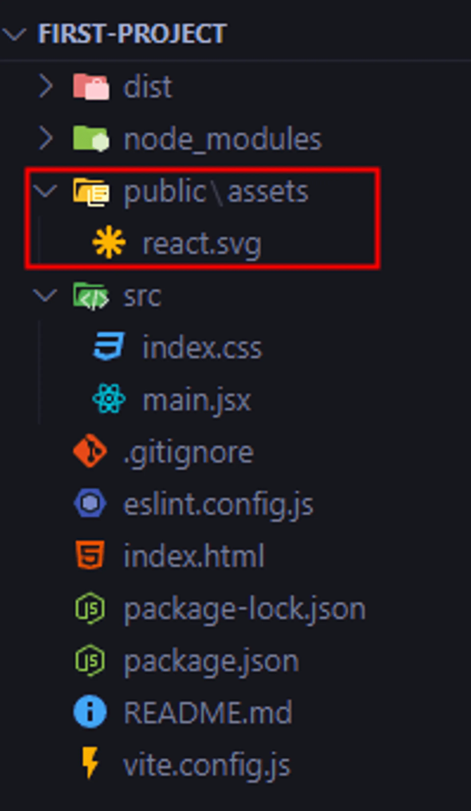
En nuestro archivo main.jsx haremos referencia al archivo empezando por la carpeta "assets" y ya no a la carpeta "src".
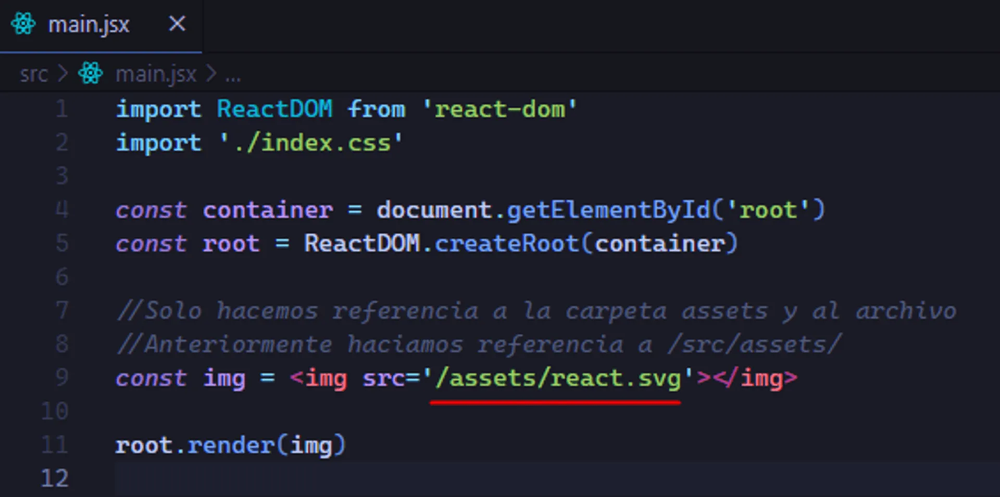
Ahora simplemente creamos la versión de producción con el comando:
npm run build
Ya sabemos que esto nos generá la carpeta "dist" pero ahora veremos la diferencia de haber puesto nuestros archivos estáticos en la carpeta "public" .
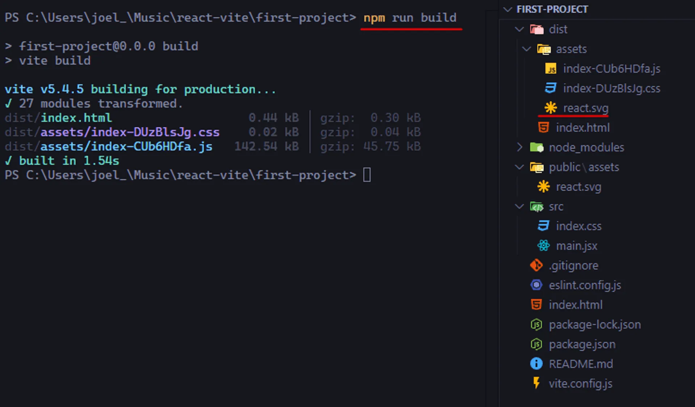
Como podemos observar en la carpeta "dist" de la imagen de arriba solo contiene el nombre de:
react.svg
Cuando utilizamos import al generar la versión de producción el nombre que nos generaba, le agregaba un hash, exactamente se le ponia el siguiente nombre:
react-CHdo91hT.svg
Otra cosa que debemos saber es que los links y scripts que utilizamos dentro del index.html es como si ocuparamos la sintaxis de import ya que al generar la versión de producción a nuestros archivos CSS y JS que habiamos enlazados en el index.html se transforman agregandoles un hash.
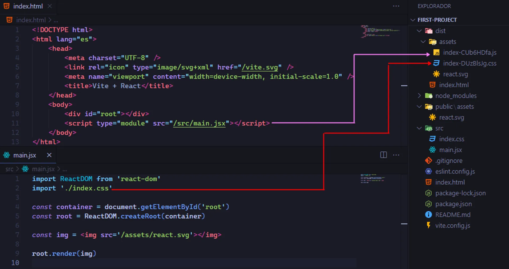
Ahora creamos el servidor de producción con el comando:
npm run preview
Miraremos que todo funciona correctamente.
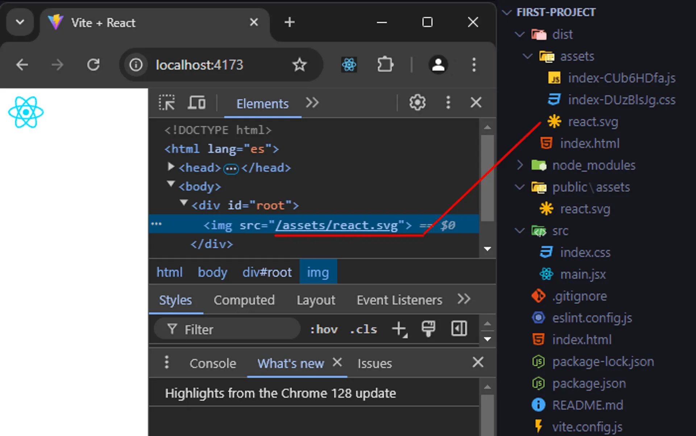
Todos nuestros archivos estáticos siempre deben de ir en la carpeta public , esta es la versión más recomendada para enlazar nuestros archivos estáticos.